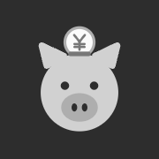

正面小猪存钱罐，一枚硬币坐在头顶的投币口上。硬币下缘被头挡住，所以整个图标是一个连着的形状——缩到 29px 也不会散成两块。颜色只用了系统里已有的四个：云杉墨绿底、零花钱暖黄的猪、暖黄深色的投币口和鼻子、手账纸白的硬币。¥ 字已经转成路径，不依赖任何字体。
浅色壁纸
深色壁纸 · 同色系
暖色壁纸 · 最难
冷色照片壁纸
深色底最稳。暖色壁纸上小猪和背景撞色、只剩深绿的轮廓可读——这是它最弱的场合，但轮廓仍然成立，不需要加白边。
app-icon-mark.svg 用在启动页、空钱包状态、成就徽章上。PNG 由主资源直接渲染，改图标只需改 svg 再重新导一次。
AppIcon.appiconset 整个文件夹（下面的下载卡片）。Assets.xcassets，把已有的 AppIcon 删掉，然后把这个文件夹整体拖进去。AppIcon。编译即可，不需要再做任何切图。18 个槽位全部填满：iPhone 与 iPad 的所有 @1x/@2x/@3x，加 1024 的 App Store 图。Contents.json 已写好，Xcode 不会报缺图警告。所有 PNG 都是不透明满幅、无预设圆角——圆角由系统遮罩，这是 App Store 审核的硬要求。

着色深色版把底色压到云杉 900、暖黄降一档饱和度，避免夜间过亮；着色版是主图标的灰度图，由系统上色，灰阶已加了一点对比度让猪不至于和背景并成一片。
这两个是可选的：在 Xcode 的 AppIcon 上把 Appearances 切成 Any, Dark, Tinted，然后把 assets/ios/appearance/ 里的两个 1024 拖到对应槽位。不加也不影响上架，系统会自动从默认图生成。